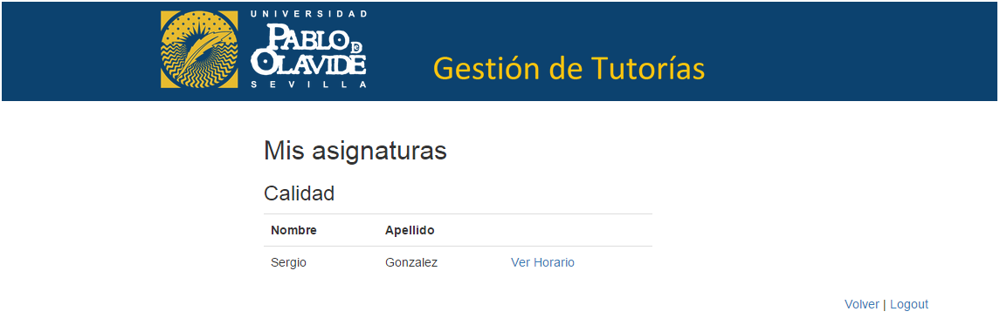
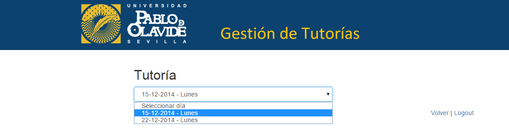
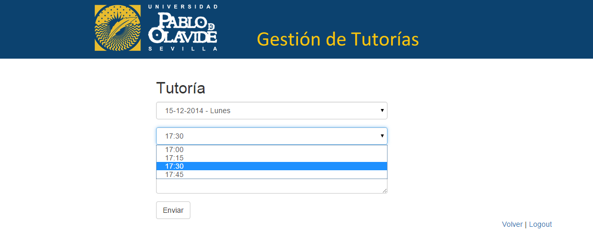
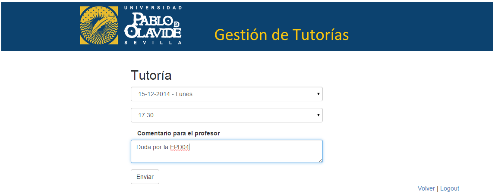

Pedir tutoria¶
Para que un alumno pida una tutoría pulsa en el panel del alumno el botón Pedir tutoría.
En la siguiente página, aparecen sus asignaturas con los profesores que las imparten. El alumno elige un profesor y pulsa Ver Horario del profesor escogido
A continuación, el alumno elige el día que quiere la tutoría.
Para seguir, el alumno elige una hora de las que disponga el profesor
Opcionalmente, el alumno puede escribir un comentario para el profesor especificando los detalles de la tutoría (con un máximo de 500 caracteres).
Por último, el alumno pulsa el botón Enviar para solicitar la tutoría.